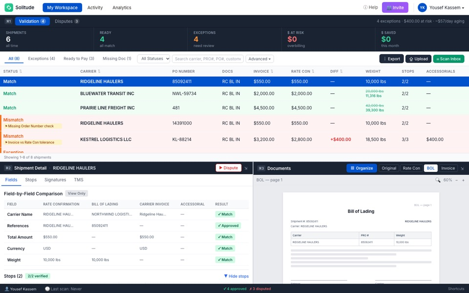
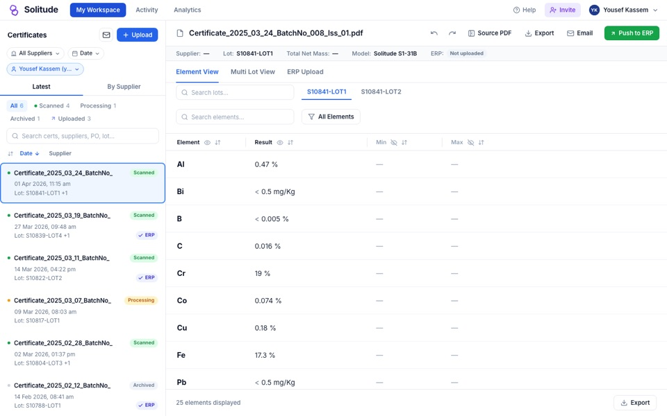
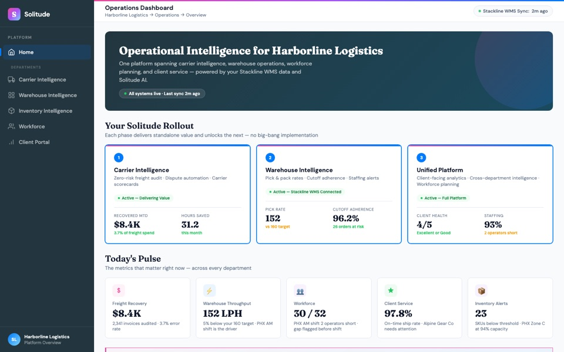
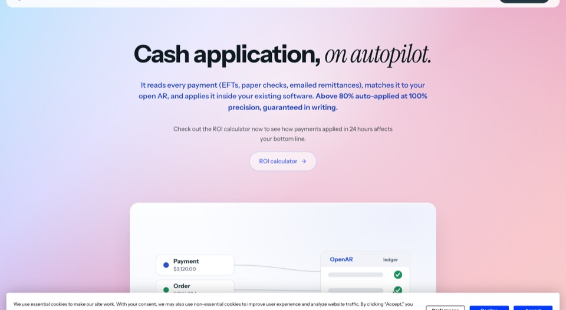

Yousef Kassem
Products I designed at Solitude.ai, where I'm co-founder and head of product. Solitude sells AI that does back-office paperwork for freight brokers, logistics companies and metals distributors.
How I build: I start from how experienced operators already do the job in the software they know, automate what can safely be automated, and keep a person in control, because in these industries a wrong entry costs the company money.
Each prototype opens with a short guided tour: an amber outline shows what to click next. Company names, people and figures inside are made up. Best viewed on a laptop.

Carrier payables workspace
WHAT YOU'RE LOOKING ATThe screen a freight broker's accounts clerk uses to decide whether to pay a trucking company's invoice.
WHY I BUILT ITBefore paying, the clerk has to confirm that three documents agree for every shipment: the price agreed with the trucker, the proof of delivery, and the invoice. Our customers did this by hand, hundreds of times a week, and every mismatch they missed was money paid out by mistake.
KEY DECISIONS- The AI checks every shipment. The clerk only reviews what it flags, with the documents open beside it, and can dispute an overcharge in one click.
- I laid it out in rows and columns like the spreadsheets clerks already used, so there was nothing new to learn.
- Customers asked to set their own checking rules instead of asking us each time. Over five versions I cut the rules set-up down until a clerk could manage it alone from Settings.
Used by two customers. One logistics company checks 500 invoices a week with it, saving more than 30 hours of manual work and over $200K a year.
Open the prototype
Certificates workspace
WHAT YOU'RE LOOKING ATThe screen a metals distributor's quality team uses to check mill certificates (the documents proving a batch of metal has the right chemical make-up) before the results go into their stock system.
WHY I BUILT ITCertificates arrived from hundreds of suppliers, each in its own layout, and were retyped by hand. One wrong figure can let a batch through that doesn't meet spec, on parts where that matters for safety. Accuracy came before speed.
KEY DECISIONS- One table, one column per element, edited in place, because the team already did this work in Excel.
- A value the supplier didn't report looks different from a value that fails, so nobody rejects a good batch by mistake.
- The main button sends the results into their system, because that, not saving, is the end of their job. A confirmation step comes first.
- We changed it daily with the customer. AI did most of the building, so engineering stopped being the bottleneck. How fast they could give feedback set the pace.
They bought it. Certificate throughput went up four times, and accuracy became far easier to track.
Open the prototype
Operations dashboard (pilot proposal)
WHAT YOU'RE LOOKING ATA proposal, not a shipped product: the home screen I designed to pitch a pilot to a warehouse logistics company.
WHY I BUILT ITThey wanted one AI platform covering freight, warehouse and staffing. Their last software rollout had taken two years, and they didn't want another long project.
KEY DECISIONS- The rollout is split into three phases that each pay for themselves: a no-risk freight audit first, then their warehouse data, then everything combined.
- The screen shows where they are in the rollout next to today's numbers, so leadership sees value at every stage.
To win a pilot without asking for a big upfront commitment. We presented it to them. It was never built.
Open the prototype
solitude.ai, the company website
WHAT YOU'RE LOOKING ATSolitude's live marketing website. I built it and host it on Replit.
WHY I BUILT ITIn discovery interviews, buyers kept asking the same thing: what value do we get from this? After we signed our largest client, we refocused on the problem they cared about most, and the site had to answer that question straight away.
KEY DECISIONS- Lead with one outcome freight brokers care about, incoming payments matched to invoices automatically, instead of a list of features.
- Put an ROI calculator before "Book a call", so buyers see the value in their own numbers before they speak to sales.
Lead with business outcomes, not features.
Visit the live site